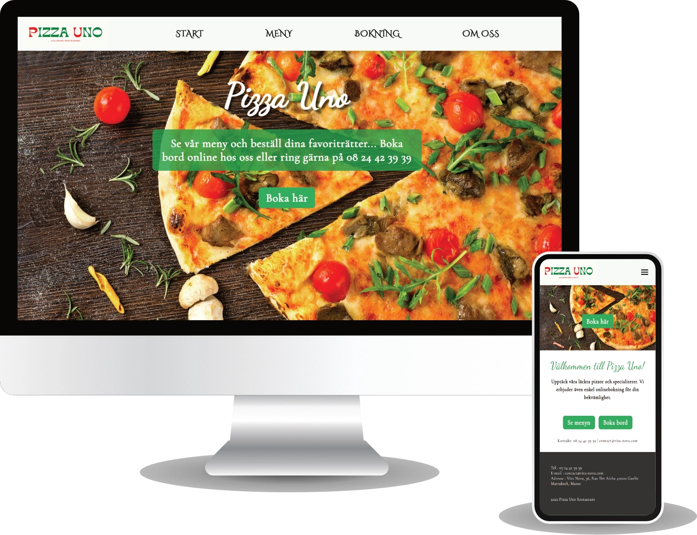
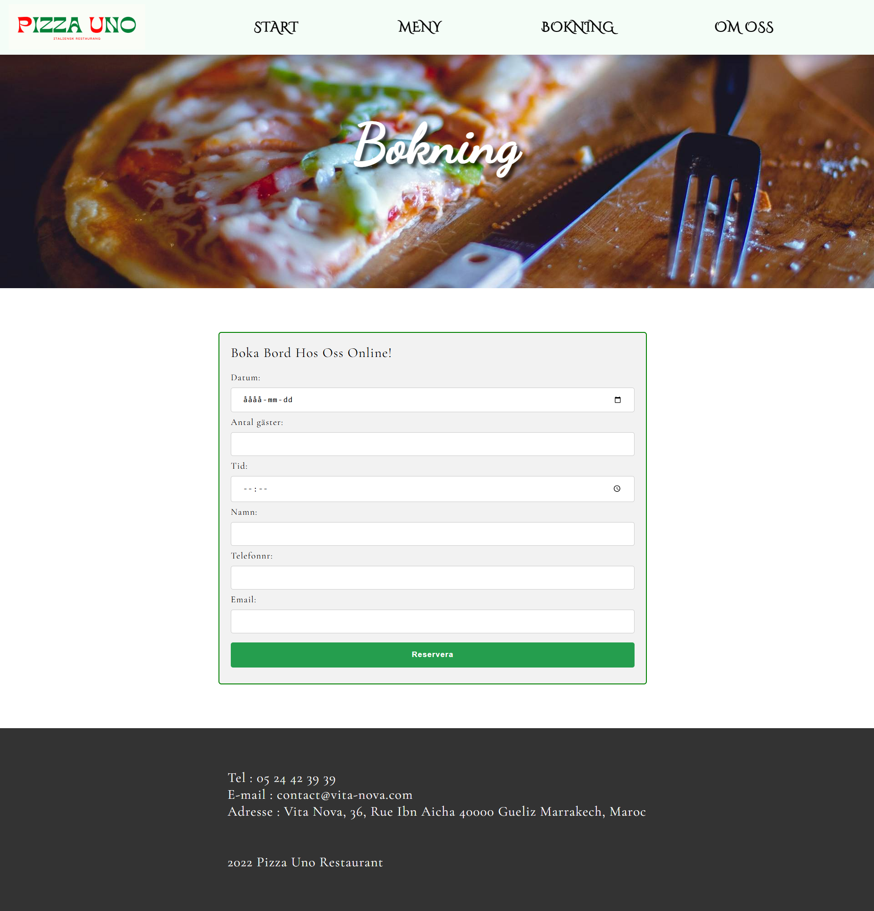
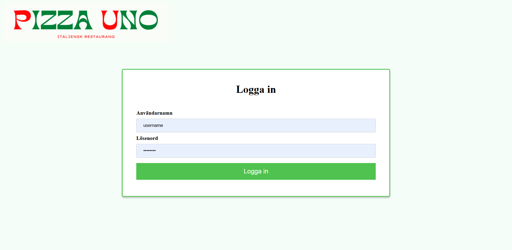
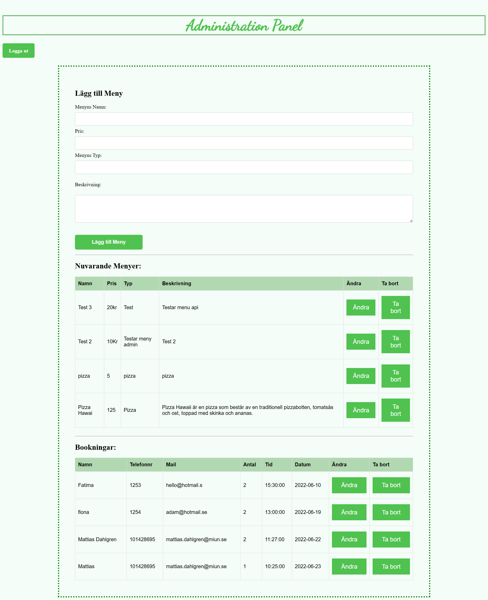

PizzaUno: Full-Stack Web Application for Restaurant Management
- Restaurant Website
- Dynamic Menu
- Booking System
- Responsive Design
- RESTful API
- Admin Interface
- Headless CMS

Purpose & Goals
The purpose is to integrate concepts from previous course modules into a cohesive project. Goals include:
- Designing a graphical profile targeting a chosen audience
- Implementing an automated workflow with Gulp and SCSS/Sass
- Creating a headless CMS architecture: separate repos for public site, admin panel & service
- Building interactivity with modern JavaScript (ES6+) or TypeScript
Architecture & Workflow
Repositories:
- REST API (PHP, MySQL) – provides endpoints for menu & booking CRUD
- Admin Panel – JavaScript frontend consuming API, secured login, content editing
- Public Site – JavaScript frontend consuming API, responsive UI, booking form
The build process uses Gulp to automate:
- SCSS compilation & autoprefixing
- JavaScript transpilation (Babel/TypeScript)
- Image optimization & live reloading (BrowserSync)
Key Features
- Dynamic menu display fetched via
fetch()from API - Online table booking & take-away order form with client-side validation
- Admin CRUD interface with editable tables (contenteditable) and real-time updates
- Responsive design for mobile & desktop using Flexbox and media queries
- Security measures: input sanitization, prepared statements in PHP



Technical Stack
Languages & Frameworks:
- HTML5, CSS3 (SCSS/Sass)
- JavaScript (ES6+) / TypeScript
- PHP 7+ for REST API
Tools & Services:
- Gulp for task automation
- MySQL / MariaDB database
- Git & GitHub Classroom for version control
- BrowserSync for live preview
Development Process
- Planning & Wireframes: ER diagrams, database schema, Figma mockups
- API Development: CRUD endpoints with PHP & MySQL, tested via Thunder Client
- Frontend Implementation: public site & admin panel, dynamic content loading
- Automated Builds: setup Gulp tasks for SCSS, JS bundling & live reload
- Testing & Validation: cross-browser checks, W3C HTML/CSS validation
.png)
Reflection
Completing this project enhanced my skills in full-stack web development, automated workflows, and headless architecture. The most challenging part was securing the API and syncing real-time updates between admin and public interfaces. Next steps include adding image upload support and email confirmations.
Website
The complete website for this project can be viewed at the following address:
View The WebsiteFor accsess to the admin dashboard (username = username and for the password = password):
Link to admin panel